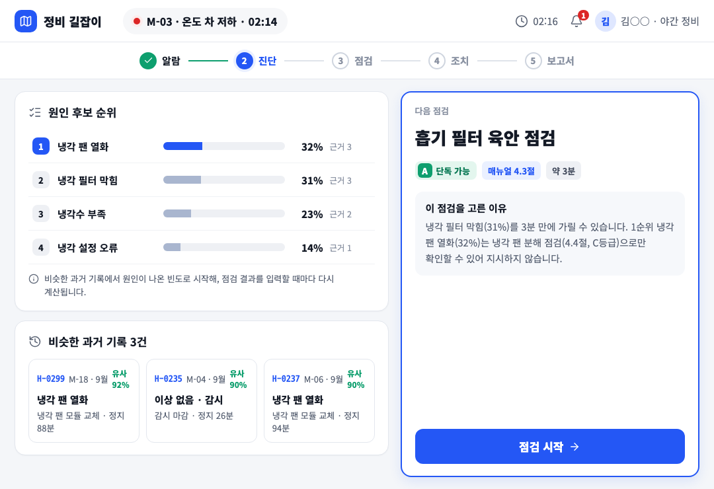
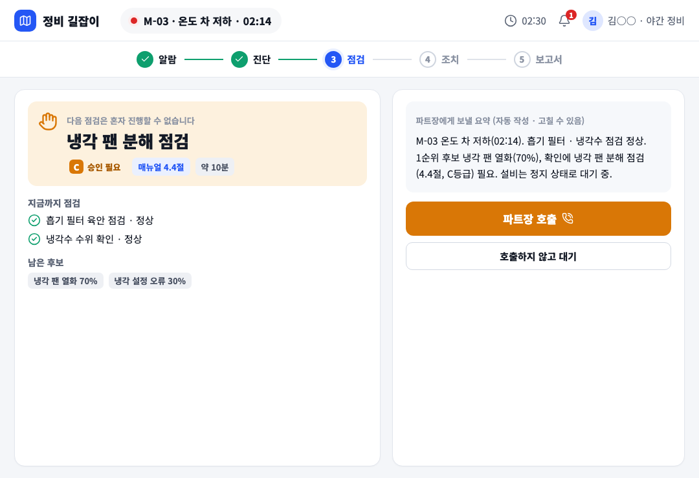
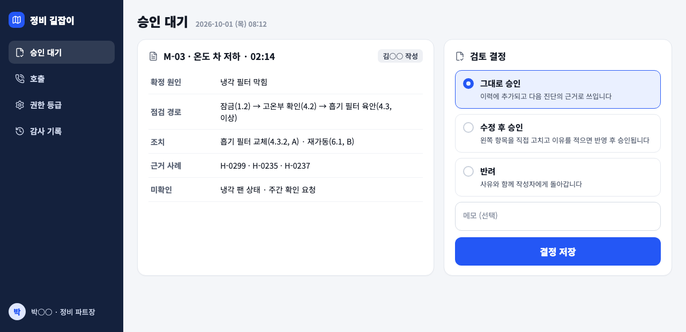

방향 수 예외 · 시각 방향은 direction-guide 하나다. 사용자가 G0에서 'G2A·G2B는 사용 가이드 화면을 유일한 안으로 한다'(D17)를 승인했고, G2A에서 가이드 화면 그대로를 승인했다. 다른 서체·색·표면·조작 모양의 방향 4~6개를 만들면 승인된 가이드의 시각 언어(등급 배지 색, 큰 주 버튼, 카드 구성)를 다시 고르게 하므로 승인 결정을 뒤집는다. 그래서 G2B는 가이드 시각 언어를 그대로 쓰고, 분리된 Craft Review에서 찾은 완성도 문제만 공통 시각 규칙에서 한 번 보정했다.
direction-guide · 사용 가이드 시각 언어 Craft Review · ready (보정 1회)
방향 문서 · 시각 규칙 파일 direction-guide.css
| typography_density | Noto Sans KR · 화면 제목 26px 900 · 카드 제목 17px 800 · 본문 15px, 태블릿은 큰 터치 버튼과 넉넉한 행 간격, PC는 표 15px 중간 밀도 |
| color_state | 연회색 바탕 + 흰 카드, 파랑 주 행동, 등급 A 초록 · B 파랑 · C 주황 · D 빨강 배지(글자 + 색 + 테두리), 상태는 칩 · 배너 · 아이콘 함께 |
| surface_hierarchy | 1px 회색 테두리 흰 카드(그림자 거의 없음), 강조 카드만 2px 파랑 테두리, 카드 안 패널은 테두리 없는 색 바탕, 입력칸은 흰 바탕 + 1.5px 테두리 |
| item_control_form | 모서리 14~16px 카드 · 10px 패널 · 옵션, 꽉 찬 큰 주 버튼 하나 + 흰 보조 버튼, 호출 · 경고 주 버튼은 진한 주황 변형 |
| emphasis_reading_order | 상단 알람 표시줄 → 진행 단계 → 왼쪽 판단 정보 → 오른쪽 지금 할 행동(주 버튼) / PC는 왼쪽 메뉴 → 제목 → 내용 → 오른쪽 결정 |

